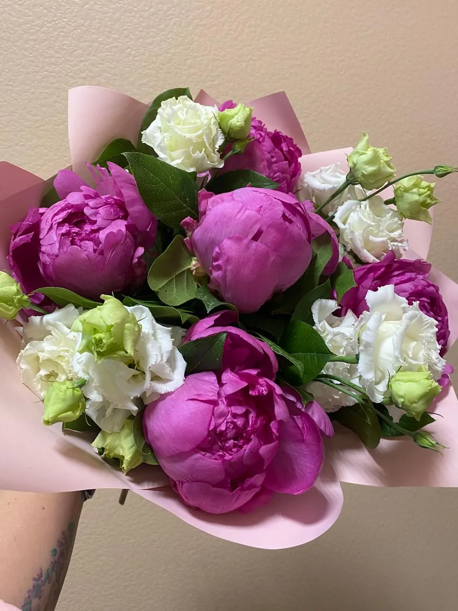
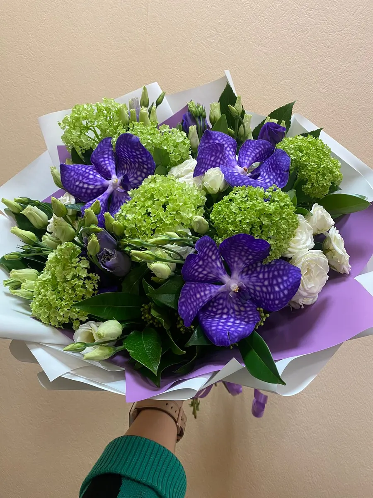
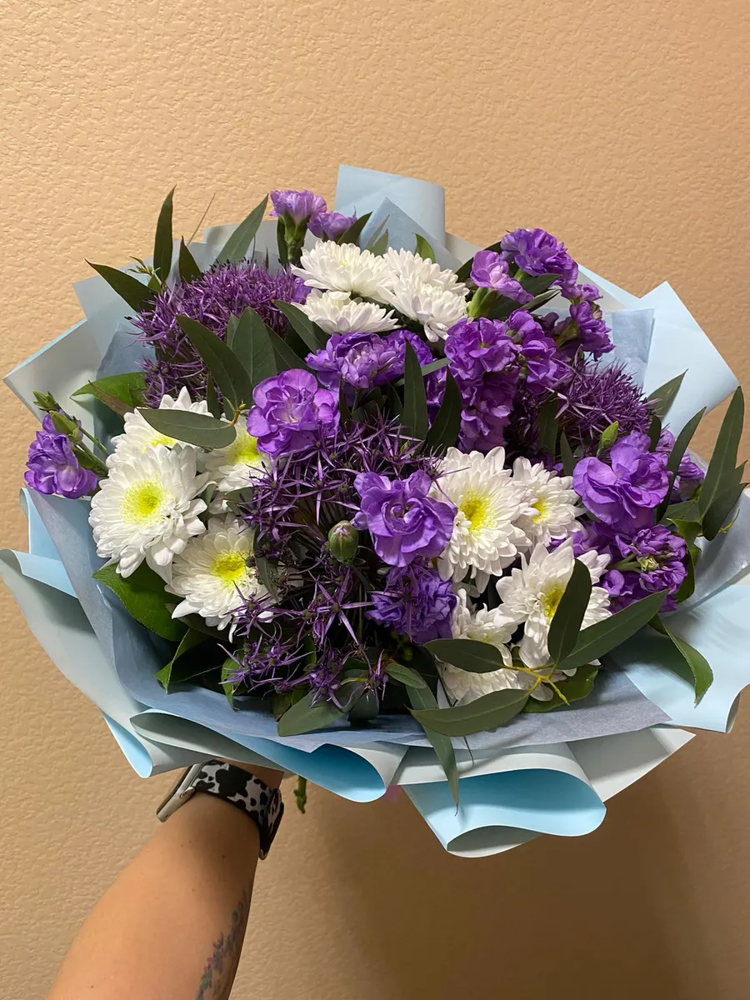

Цветочный магазин · Норильск · Ленинский просп., 6
Цветы и букеты в Норильске – заказ и доставка, открыто круглосуточно
Собираем букеты по вашему желанию, можно заказать заранее и договориться о времени. Рейтинг 4,7 на Яндекс.Картах.
- Открыто круглосуточно
- Рейтинг 4,7 на Яндекс.Картах
- Заказ из другого города – для родных

Что входит в букет
Входит
- Цветы и зелень по составу букета
- Упаковка
- Ленты и оформление
Отдельно, если нужно
- Доставка – уточняйте при заказе
Что можно заказать
Цены на карточке не указаны. Точный состав и стоимость назовём перед заказом.
Букеты
- Авторский букетуточнить
- Букет с пионамиуточнить
- Ромашковый букетуточнить
- Букет в сиреневых тонахуточнить
- Цветы в коробкеуточнить
Цены уточняйте у флориста в чате. На вашем сайте будут ваши цены.
Как заказать
- 01
Выбираете формат
Из списка или расскажите о поводе.
- 02
Пишете в чат
Скажете повод и к какому часу.
- 03
Подтверждаем состав и цену
Ответим в рабочее время.
- 04
Забираете или заказываете доставку
Ленинский просп., 6, Норильск. Про доставку спросите в чате.


Что обещаем
Букет по вашему желанию
Так пишут в отзывах на Картах.
Заказ заранее
Можно договориться о времени.
Открыто круглосуточно
Ленинский просп., 6.
Рейтинг 4,7
29 отзывов на Яндекс.Картах.
Отзывы с Яндекс.Карт
«Отличный салон цветов,прекрасные флористы,всегда спросят наводящие вопросы,по типу как лучше упаковать, на машине ли вы или пешком и т.д в общем рекомендую очень!!»
Кирилл Уткин · 1 сентября 2024
«Собирают красивые букеты по желанию. Можно заранее заказать букет и договориться о времени.»
Флорида Игебаева · 26 декабря 2024
«Лучшее заведение в Норильске. Всегда оттуда маме цветы отправляю. А администраторы, просто ангелочки.»
Анастасия Орлова · 31 марта
Отзывы с карточки на Яндекс.Картах, без правок.
Частые вопросы
Сколько стоит букет?
Цену называем после подбора состава – напишите повод и бюджет в чат.
Не знаю, какой букет выбрать
Напишите повод и бюджет – флорист подскажет.
Когда вы работаете?
Круглосуточно.
Где вы находитесь?
Ленинский просп., 6, Норильск.
Назовите повод и час
- Адрес
- Ленинский просп., 6, Норильск, Норильск
- Часы
- Круглосуточно
- Телефон
- +7 (913) 525-01-05